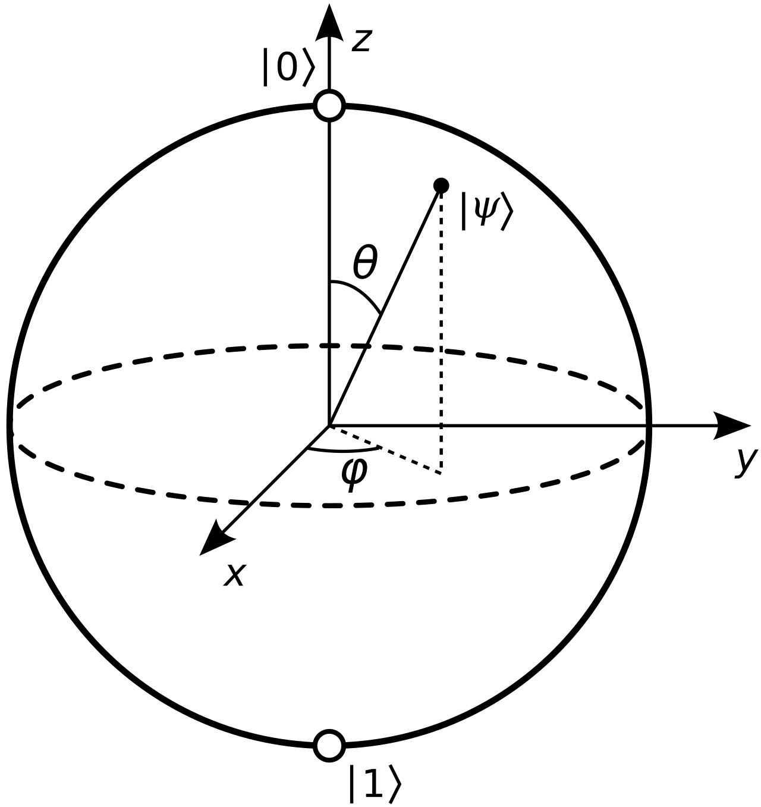

Quantum bits
The bit is the fundamental concept of classical computation and classical information. We’re going to describe qubits as mathematical objects with certain specific properties. ‘But hang on’, you say, ‘I thought qubits were physical objects.’ It’s true that qubits, like bits, are realized as actual physical systems, and in Section 1.5 and Chapter 7 we describe in detail how this connection between the abstract mathematical point of view and real systems is made.
What then is a qubit? Just as a classical bit has a state – either 0 or 1 – a qubit also has a state. Two possible states for a qubit are the states \lvert 0 \rangle and \lvert 1 \rangle. The notation $ \lvert \rangle $ is called Dirac notation. The difference between bits and qubits is that a qubit can be in a state other than \lvert 0 \rangle or \lvert 1 \rangle. It is also possible to form linear combinations of states, often called superpositions:
where numbers \alpha and \beta are complex numbers, although for many purposes not much is lost by thinking of them as real numbers.The special states \lvert 0 \rangle and \lvert 1 \rangle are known as computational basis states, and form an orthonormal basis for this vector space.
Rather remarkably, we cannot examine a qubit to determine its quantum state, that is, the values of α and β. Instead, quantum mechanics tells us that we can only acquire much more restricted information about the quantum state. When we measure a qubit we get either the result 0, with probability |\alpha|^2, or the result 1, with probability |\beta|^2. Naturally, |\alpha|^2 + |\beta|^2 = 1, since the probabilities must sum to one. Geometrically, we can interpret this as the condition that the qubit’s state be normalized to length 1. Thus, in general a qubit’s state is a unit vector in a two-dimensional complex vector space.
By contrast, a qubit can exist in a continuum of states between \lvert 0 \rangle and \lvert 1 \rangle – until it is observed. Let us emphasize again that when a qubit is measured, it only ever gives ‘0’ or ‘1’ as the measurement result – probabilistically. For example, a qubit can be in the state $$ \frac{1}{\sqrt{2}} \lvert 0 \rangle + \frac{1}{\sqrt{2}} \lvert 1 \rangle, $$ which, when measured, gives the result 0 fifty percent |{\frac{1}{\sqrt{2}}}|^{2} of the time, and the result 1 fifty percent of ther time. We will return often to this state, which is sometimes denote \lvert + \rangle.
Bloch Sphere
Another way that can helps us thinking about qubtis is the following geometric representation called Bloch Sphere. Since |\alpha|^2 + |\beta|^2 = 1, we can write $$ \lvert \psi \rangle = e^{i\gamma}(cos\frac{\theta}{2}\lvert 0 \rangle + e^{i\phi} sin\frac{\theta}{2}\lvert 1 \rangle), $$ where \theta, \phi and \gamma are real numbers. In Chapter 2 we will see that we can ignore the factor of e^{iγ} out the front, because it has no observable effects, and for that reason we can effectively write $$ \lvert \psi \rangle = cos\frac{\theta}{2}\lvert 0 \rangle + e^{i\phi} sin\frac{\theta}{2}\lvert 1 \rangle, $$ The numbers \theta and \phi define a point on the unit three-dimensional sphere, as shown in Figure 1.3. This sphere is often called the Bloch sphere; it provides a useful means of visualizing the state of a single qubit, and often serves as an excellent testbed for ideas about quantum computation and quantum information. Many of the operations on single qubits which we describe later in this chapter are neatly described within the Bloch sphere picture. However, it must be kept in mind that this intuition is limited because there is no simple generalization of the Bloch sphere known for multiple qubits.
Figure 1: Bloch_sphere 
{kind=link}
How much information is represented by a qubit? Paradoxically, there are an infinite number of points on the unit sphere, so that in principle one could store an entire text of Shakespeare in the infinite binary expansion of θ. However, this conclusion turns out to be misleading, because of the behavior of a qubit when observed. Recall that measurement of a qubit will give only either 0 or 1. Furthermore, measurement changes the state of a qubit, collapsing it from its superposition of \lvert 0 \rangle and \lvert 1 \rangle to the specific state consistent with the measurement result. For example, if measurement of \lvert 0 \rangle gives 0, then the post-measurement state of the qubit will be \lvert 0 \rangle. What is relevant for our purposes is that from a single measurement one obtains only a single bit of information about the state of the qubit, thus resolving the apparent paradox. It turns out that only if infinitely many identically prepared qubits were measured would one be able to determine \alpha and \beta for a qubit in the state given in Equation (1.1).
Multiple qubits
Suppose we have two qubits. If these were two classical bits, then there would be four
possible states, 00, 01, 10, and 11. Correspondingly, a two qubit system has four computational
basis states denoted \lvert 00 \rangle, \lvert 01 \rangle, \lvert 10 \rangle, \lvert 11 \rangle. A pair of qubits can also exist in superpositions of these four states, so the quantum state of two qubits involves associating a complex coefficient – sometimes called an amplitude – with each computational basis state, such that the state vector describing the two qubits is,
$$
\lvert \psi \rangle= \alpha_{00}\lvert 00 \rangle + \alpha_{01}\lvert 01 \rangle + \alpha_{10}\lvert 10 \rangle + \alpha_{11}\lvert 11 \rangle
$$
Similar to the case for a single qubit, the measurement result x (= 00, 01, 10 or 11) occurs with probability |\alpha_x|^2, with the state of the qubits after the measurement being \lvert x \rangle. Using normalization condition to express the probabilities sum to one is therefore \sum^{}_{x\in \{0,1\}^2}|\alpha_{x}|^2 = 1, where the notation \{0,1\}^2 means the set of strings of length two with each letter being either zero or one. For a two qubit system, we could measure just a subset of the qubits, say the first qubit, and you can probably guess how this works: measuring the first qubit alone gives 0 with probability |\alpha_{00}|^2 + |\alpha_{01}|^2, leaving the post-measurement state.
Measuring the First Qubit
When you measure only the first qubit, the system collapses based on the probability distribution derived from the amplitudes of the first qubit's states:
-
Probability of measuring \lvert 0 \rangle: $$ P(0) = |\alpha_{00}|^2 + |\alpha_{01}|^2 $$
-
Probability of measuring \lvert 1 \rangle: $$ P(1) = |\alpha_{10}|^2 + |\alpha_{11}|^2 $$
The state of the system adter the measurement depends on the outcome:
-
If the first qubit is measured as \lvert 0 \rangle:
- The system's post-measurement state is the projection of \lvert \psi \rangle onto the subspace where the first qubit is \lvert 0 \rangle: $$ \lvert \psi' \rangle = \frac{\alpha_{00}\lvert 00 \rangle + \alpha_{01}\lvert 01 \rangle}{\sqrt{|\alpha_{00}|^2 + |\alpha_{01}|^2}} $$
- The remaining qubit (the second qubit) is now in a superposition of \lvert 0 \rangle and \lvert 1 \rangle, but normalized to reflect the probabilities conditioned on the first qubit being \lvert 0 \rangle.
-
If the first qubit is measured as \lvert 1 \rangle:
- The post result becomes: $$ \lvert \psi' \rangle = \frac{\alpha_{10}\lvert 10 \rangle + \alpha_{11}\lvert 11 \rangle}{\sqrt{|\alpha_{10}|^2 + |\alpha_{11}|^2}} $$
- Again, the second qubit's state is conditioned on the first qubit being \lvert 1 \rangle. Notice that the post-measurment state is re-normalized by factor \sqrt{|\alpha_{00}|^2 + |\alpha_{01}|^2} so that it still satisfies the normalization condition, just as we expect for a legitimate quantum state.
Q1: Why Measure Only a Subset of Qubits?
In quantum systems, measuring a subset of qubits is often useful to:
- Extract partial information: Measuring only some qubits allows us to gain specific information while leaving the rest of the system intact for further computation or analysis.
- Preserve entanglement: If the qubits are entangled, the measurement of one qubit impacts the state of the others. This behavior underpins many quantum algorithms and protocols, like quantum teleportation and superdense coding.
- Enable conditional operations: Measurement results can be used to perform conditional logic, such as applying specific quantum gates based on outcomes.
Note:
Intuition Behind Measurement Probabilities
The probability of each measurement outcome reflects the "weight" of the corresponding component in the superposition. For example:
- If |\alpha_{00}|^2 + |\alpha_{01}|^2 is large, the first qubit is more likely to be measured as \lvert 0 \rangle.
- The remaining quantum state is renormalized to reflect the probabilities conditioned on the observed measurement outcome.
Q2: Why the first qubit’s state is only associated with \lvert 00 \rangle and \lvert 01 \rangle? Since we know the full state is: $$ \lvert \psi \rangle= \alpha_{00}\lvert 00 \rangle + \alpha_{01}\lvert 01 \rangle + \alpha_{10}\lvert 10 \rangle + \alpha_{11}\lvert 11 \rangle $$ Here:
- The first qubit is represented by the first digit of each basis stae (0 or 1).
- The second qubit is represented by the second digit of each basis stae (0 or 1).
Q3 Why only \lvert 00 \rangle and \lvert 01 \rangle
When measuring only the first qubit, we are effectively collapsing the system onto the subspace where the first qubit has a definite value (0 or 1).
-
Measurement Projects the State: When we measure the first qubit, the system is divided into two groups:
- States where the first qubit is \lvert 0 \rangle: \lvert 00 \rangle and \lvert 01 \rangle
- States where the first qubit is \lvert 1 \rangle: \lvert 10 \rangle and \lvert 11 \rangle
Measuring the first qubit and obtaining \lvert 0 \rangle projects the state into the subspace:
\ Subspace \ for \ \lvert 0 \rangle : \{\lvert 00 \rangle, \lvert 01 \rangle\}This means we now only consider the amplitudes \alpha_{00} and \alpha_{01}, which correspond to \lvert 00 \rangle and \lvert 01 \rangle.
When measuring the first qubit:
- We divide the full state into subspaces based on the first qubit's value (\lvert 00 \rangle or \lvert 01 \rangle)
- Only the amplitudes of the basis states corresponding to the observed value of the first qubit contribute to the measurement outcome and post-measurement state.
- This is because the measurement of one qubit effectively collapses the global superposition into a subset of states consistent with the measured value.
Q4 What is "Conditioning" in Quantum Mechanics?
When we say a qubit's state is "conditioned" on the outcome of another qubit, it means the state of the remaining qubit (or qubits) depends on the measurement result of the first qubit. This is analogous to the concept of conditional probability in classical probability theory, but here it applies to the post-measurement quantum state.
Q5: Why Is It Called "Conditioning"?
The term conditioning reflects how the state of the second qubit depends on the measurement outcome of the first qubit. This dependency can be understood as follows:
- Before Measurement:
- The two qubits are entangled (or at least correlated) in the general superposition state \lvert \psi \rangle.
- The global state doesn't assign definite states to individual qubits, only joint probabilities (e.g., the probabilities of \lvert 00 \rangle, \lvert 01 \rangle, \lvert 10 \rangle, \lvert 11 \rangle)
- After Measurement of the First Qubit:
- The measurement result "selects" a subspace of the original state, collapsing the first qubit into a definite state (\lvert 0 \rangle or \lvert 1 \rangle).
- The second qubit's state is updated or conditioned to reflect this result. This process is mathematically analogous to conditioning in classical probability, where:
Takeaway:
- The second qubit's state is conditioned on the first qubit being \lvert 1 \rangle: This means the measurement result of the first qubit (being \lvert 1 \rangle) determines the possible state and probabilities of the second qubit.
- The first qubit's state is conditioned on the first qubit being \lvert 1 \rangle: This is somewhat redundant and unusual phrasing, as it simply means that the first qubit is \lvert 1 \rangle after measurement. It's not really "conditioned" in the same sense since it has alreadt collapsed to a definite value.
Bell state or EPR pair
Let's look into two qubit state Bell state or EPR pair, $$ \lvert \psi \rangle = \frac{\lvert 00 \rangle + \lvert 11 \rangle}{\sqrt 2} $$ This is a Bell state representing maximum entanglement.
-
Before Measurement:
- Neither qubit has a definte state.
- Measuring the first qubit gives \lvert 0 \rangle or \lvert 1 \rangle, each with 50% probability.
-
Measuring the first Qubit:
- If the first Qubit is \lvert 0 \rangle, the second qubit collapses to \lvert 0 \rangle. The post-measurement state is $$ \lvert \psi_{post} \rangle = \lvert 00 \rangle $$
- If the first Qubit is \lvert 1 \rangle, the second qubit collapses to \lvert 1 \rangle. The post-measurement state is $$ \lvert \psi_{post} \rangle = \lvert 11 \rangle $$ Here, the second qubit's state depends entirely on the outcome of the first qubit, demonstrating conditional behavior.
The Bell state has the property that upon measuring the first qubit, one obtains two possible results: 0 with probability \frac{1}{2}, leaving the post-measruement state \lvert \psi' \rangle = \lvert 00 \rangle, and 1 with probability \frac{1}{2}, leaving \lvert \psi' \rangle = \lvert 11 \rangle. As a result, a measurement of the second qubit always gives the same result as the measurement of the first qubit. That's, the measurement outcomes are correlated. EPR’s insights were taken up and greatly improved by John Bell, who proved an amazing result: the measurement correlations in the Bell state are stronger than could ever exist between classical systems. (Section 2.6)
we may consider a system of n qubits. The computational basis states of this system are of the form \lvert x_{1}x_{2}...x_{n}\rangle, and so a quantum state of such a system is specified by 2^{2} amplitudes.